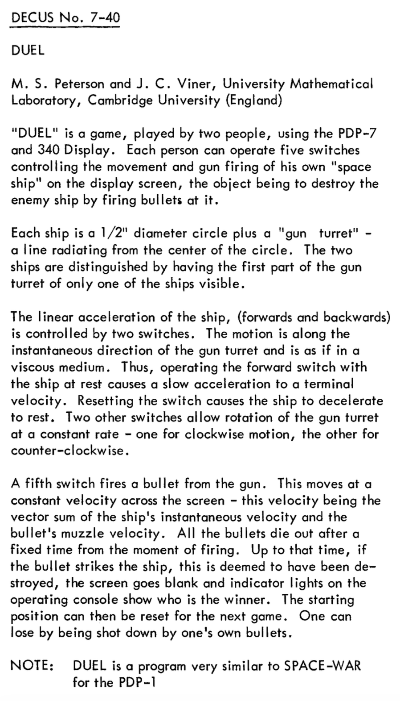
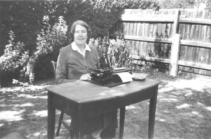
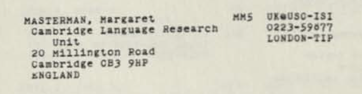

Duel, and the University of Cambridge connection
One thread of Spacewar!'s long journey runs to the Cambridge University Mathematical Laboratory in the UK, where the game appears twice. Once as a clone, a small PDP-7 game called Duel. And once, more consequentially, as an inspiration: it was partly the news of Spacewar! that drew Cambridge into interactive computer graphics, and from there into computer-aided design, a research line that would outlast the game many times over. The two appearances sit on the same machine, and they say something about how a game can matter.
"Very similar to Space-War"

In 1968, two graduate students at the Mathematical Laboratory, M. S. Peterson and J. C. (John) Viner, wrote Duel for the laboratory's PDP-7 and its Type 340 display. It was catalogued in the DEC users' library as DECUS 7-40, dated June 1968, whose entry concedes that it is "a program very similar to SPACE-WAR for the PDP-1." Two ships duel with a gun turret and bullets, each pilot working five console switches: two for acceleration, two to swing the turret, one to fire.
Where the MIT game has gravity, hyperspace, and explosions, Duel has none of these. A hit simply blanks the screen and lights a winner's lamp; bullets are the vector sum of ship and muzzle velocity, so you can fly into your own fire. Its one lasting idea is "viscous space": ships accelerate to a terminal velocity and coast to a halt rather than drifting forever, "hardly scientifically accurate", the authors admit, but a feel later found across the arcade. By the accounts that survive it was "a demonstration of the PDP-7's graphical capabilities" and "wasn't taken very seriously". No copies of Duel survive at Cambridge; it is known only from the catalogue.
A game becomes a reason to build a graphics lab
The PDP-7 on which Duel ran was not bought to play games. In 1965 Maurice Wilkes, who had built the pioneering EDSAC, decided to expand the laboratory's computer-science research using Titan, the Atlas 2 prototype developed with Ferranti, rather than by building yet another, bigger machine. On a visit to the United States he had been struck by two things: Ivan Sutherland's Sketchpad, the interactive drawing system of 1963, and the real-time graphics work at Lincoln Laboratory and MIT "which had led to the innovative computer game 'Space War'." Cambridge acquired a PDP-7 (1965–66 in the sources) to drive a vector display, and the graphics programme began. Duel itself came later: the DECUS catalogue dates it to June 1968.
So the relation runs both ways. Spacewar! was among the demonstrations that persuaded Cambridge there was something worth doing with interactive graphics; and once the PDP-7 was installed, Spacewar! was cloned on it as Duel. The same game is at once the spark and the echo.
The architects and the solid modellers
Wilkes made the PDP-7 available to William Newman, son of the mathematician Max Newman (who had taught Wilkes at St John's), then a PhD student at Imperial College working on a system to let architects design public buildings from standard modules. It was a striking demonstration of what interactive graphics could do, and Wilkes wanted to build on it toward Computer-Aided Design. He met Charles Lang at MIT, found him already working on graphics and CAD, and recruited him to Cambridge.
Lang's first job was to write the software for the data link between the PDP-7 and Titan, joining the interactive display to the laboratory's main machine. He then built a CAD group. His research student Robin Forrest did the early work on two- and three-dimensional curves and surfaces, the computational geometry the field would need. Others began on solid modelling, and in 1969 Lang recruited Ian Braid, who built BUILD, a boundary-representation 3D solid modeller well ahead of anything then available, and later the more advanced BUILD 2.
Lang saw that the prize was the whole chain, CAD into CAE and CAM, engineering and manufacturing. The object would be created by the designer as a complete model in the computer's memory; that model would be the common link across every stage from design to manufacture, with machine instructions generated straight from it. The intermediate work of producing and reading drawings would simply fall away, saving time and cost. It is the idea at the centre of modern engineering software.
The company Duel kept
Peterson and Viner worked in a laboratory of extraordinary density. The Mathematical Laboratory and the Ferranti team at Lily Hill that built Titan and the Atlas 2 included, among others, Maurice Wilkes (of EDSAC), David Wheeler (the closed subroutine and the "Wheeler jump"), Roger Needham, Christopher Strachey, Martin Richards (BCPL, an ancestor of C), Steve Bourne (later of the Unix shell), the mathematician Peter Swinnerton-Dyer, and Sandy Fraser, alongside David Barron, David Barton, Philip Brenan, Brian Chapman, Mike Dodd, Mike Guy, David Hartley, Richard Jennings, Barry Landy, Charles Lang, Johnny Moore, Bernard Pearson, Peter Radford, Chris Spooner, Tom Wansbrough, Neil Wiseman, Mike Vickers, and John Viner. Duel was a graphics demonstration at the edge of that effort; the same machines and people were turning interactive computing into a discipline.
Margaret Masterman and the computer that wrote poems
The Mathematical Laboratory was not the only Cambridge place reimagining the computer. A short walk from the Lab, on Millington Road, Margaret Masterman (1910–1986), one of the handful of students to whom Wittgenstein dictated the notes that became The Blue Book (and, by some accounts, a favourite of his), had founded the Cambridge Language Research Unit (CLRU) in 1954. It was never an official university department: an independent, grant-funded, and famously equipment-poor unit, housed in a ramshackle former museum and bankrolled mostly by American military and science agencies (AFOSR, ONR, NSF) and later British and European funds.9 Its work ran on whatever it could reach: Hollerith punch-card machines, the University's scarce and very limited computers (EDSAC 2 and an early IBM), and from 1963 a tiny ICT 1202 of its own.1 From that toehold it became one of the pioneering centres of computational linguistics.2

Her ambition ran wider than any single technique. In a 1962 essay for the Times Literary Supplement she proposed that the computer might become "a telescope for the mind", remaking our picture of thought as the optical telescope, three centuries before, had remade our picture of the heavens: a qualitative change, new ideas rather than old results reached faster. She argued for the worth of computer-made art against fierce opposition, including from the critic F. R. Leavis, whose campaign against "scientism" was of a piece with his attack on C. P. Snow and the two cultures. Yorick Wilks reckoned her "ahead of her time by some twenty years".3 The literary scholar Lydia Liu reads the CLRU's thesaurus and semantic algorithms as Masterman doing philosophy in the machine, putting Wittgenstein's language-games into working code, and as an early ancestor of the word-vector methods that drive language models today. The same refusal of divided worlds shaped her religious life: a Christian contemplative and a leading figure in the Epiphany Philosophers5, she treated "theism as a scientific hypothesis", and her religious papers were later edited by the future Archbishop of Canterbury, Rowan Williams.6
The CLRU also experimented with computer art. With Robin McKinnon-Wood, Masterman built Computerized Haiku, a programme that assembled short poems from word-lists and a fixed verse template, shown at Cybernetic Serendipity (ICA, London, 1968), the first major exhibition of computer art. The original program and machine are lost; what survives is Masterman's 1971 essay, from which the piece has since been reconstructed, a template and its word-lists "performed", in her framing after Turing, by a human or a machine alike. The parallel to this project is exact: a lost computational artefact, recovered from its description and read as both instruction and culture.

The room that wrote Spacewar! was entirely male. A short walk away, one of the founding laboratories of language computing, and of computer poetry, was founded and led by a woman, raised in a notable Liberal political family,7 who also helped found Lucy Cavendish College (named for her great-aunt, a pioneer of women's education) and became its first Vice-President. Cambridge connects the two, the game and the poem, the engineer's machine and the philosopher's, and a reminder that the history of Spacewar! opens up many unexpected connections.
A game's other inheritance
The "long journey" of Spacewar! is usually told as a story of copies: the game carried from machine to machine, re-coded, renamed, played. Cambridge adds a different kind of descent. Here the game is less a thing copied than a thing that persuades, evidence that the interactive, real-time, graphical machine was worth taking seriously, offered at exactly the moment a laboratory was deciding where to put its effort. What followed, boundary-representation solid modelling, was foundational for the geometry kernels underneath today's CAD. A program written for fun helped, at one remove, to seed the software with which much of the built and manufactured world is now designed.
The hacker culture that made Spacewar! "mainly for fun" produced, in the same gesture, an argument about what computers were for, one that institutions like the Mathematical Laboratory then took up and turned to work. The play and the engineering are two sides of the same coin: one is how the other got started. Even where the game sat in the institution was reversed between the two Cambridges, the American and the English.8
- The CLRU's machines. Karen Spärck Jones recalled Roger Needham introducing her to the CLRU, "where Margaret Masterman was leading work on machine translation and information retrieval," in the days when people "were trying to do this completely new thing using the very limited machines (EDSAC 2, early IBM) that were then around." Source: Karen Spärck Jones, autobiographical note, The Ring (Cambridge University Computer Laboratory newsletter), 2005. ↩
- Feigenbaum and the CLRU's reach. Edward Feigenbaum, later a founder of artificial intelligence (the expert-systems pioneer behind DENDRAL and MYCIN, and a Turing Award winner), spent a fellowship year around 1959 at the National Physical Laboratory near London, fresh from Perlis's group at Carnegie, and found British computing dispiriting. His sharpest complaint was Maurice Wilkes's insistence at Cambridge on closed-shop batch operation, where a researcher "shoved the cards through the window and got your paper" rather than touching the machine. The redeeming contact was the CLRU circle: Roger Needham and Karen Spärck Jones sought him out as an American who knew list processing and compilers, and Spärck Jones introduced him to Masterman, "head of her language research unit," and to her husband, the philosopher Richard Braithwaite. "It was a great scene. I spent a lot of time with them." That a future architect of American AI made his way to this small, off-the-books unit is a measure of its reach. Source: Donald Knuth's oral-history interview with Feigenbaum (Computer History Museum, 2007). ↩
- "A telescope for the mind". The phrase is Masterman's, from "Freeing the Mind, VI: The Intellect's New Eye," Times Literary Supplement, April 1962, p. 284 (sources differ on the exact day). The reading here follows Willard McCarty, "A telescope for the mind?", in Debates in the Digital Humanities, ed. Matthew K. Gold (University of Minnesota Press, 2012), who also reports F. R. Leavis's hostility. The "twenty years" tribute is from Yorick Wilks's memoir, "Margaret Masterman", in Early Years in Machine Translation, ed. W. John Hutchins (John Benjamins, 2000). ↩
- The CLRU on the ARPANET. The unit and Masterman are listed in the ARPANET Directory, June 1974 (NIC 22979), with a mailbox at the USC-ISI host in California reached through the London TIP, the UK's network gateway at University College London. Facsimile: Computer History Museum, 102805038. ↩
- The Epiphany Philosophers. The Christian-philosophical community Masterman helped found around 1950 with her husband, the philosopher of science Richard Braithwaite, and the physicist Ted Bastin, with the philosopher Dorothy Emmet among its members. The name came from the Anglican Community of the Epiphany at Truro, to which the founders were attached. Its premise was that religious contemplation and the natural sciences belong together rather than in separate compartments; it drew close to contemplative religious orders, ran retreats combining prayer and meditation with scientific and philosophical discussion, and from 1966 published the journal Theoria to Theory, to explore "the interface of science, philosophy and religion." The group still exists. Sources: Dorothy Emmet, Philosophers and Friends (1996); epiphanyphilosophers.org. ↩
- Masterman's Christianity. Her thought refused the science/religion split as firmly as the two cultures. A contemplative shaped by an unconventional Cambridge Anglo-Catholicism, and a leading figure in the Epiphany Philosophers (the Cambridge circle of scientists and contemplatives behind the journal Theoria to Theory), she treated theism as a scientific hypothesis and contemplation as a disciplined exercise, "a live contemplation, not a dead one" (from a notebook of summer 1962, the year of the telescope essay, that set out to hold together "the humanist scientific world and the traditional Christian world"). At its centre was the Logos, "a fundamental rhythm in things", and a vision of the Church as a "passionistic society" trained for "active risk and redemptive suffering", a "spirituality of resistance" to organised cruelty. Her papers were collected posthumously as Religious Explorations, ed. Dorothy Emmet and Rowan Williams (Epiphany Philosophers, 1989; the introduction is Williams's memorial address, and the volume includes her 1978 Gore Lecture at Westminster Abbey; large scan). ↩
- A Liberal inheritance. Her father, Charles Masterman, was a radical Liberal cabinet minister, author of The Condition of England (1909), and a central architect of the New Liberal welfare reforms under Lloyd George (and later head of the WWI propaganda bureau at Wellington House). Her mother, Lucy Lyttelton (Masterman), was a Liberal parliamentary candidate (1929), poet and writer. So she grew up inside the reforming, social-conscience wing of the Liberal Party. Masterman herself played a leading part in forming the Cambridge Refugee Committee in 1939–40. Source: the Papers of Margaret Braithwaite, Lucy Cavendish College Archives. ↩
- Centre and fringe, inverted. The two Cambridges put play and scholarship on opposite sides of the institution. At MIT, the official academic computing ran on the big IBM machines of the Computation Center, while Spacewar! and its hackers lived at the margin, on the PDP-1 in the Research Laboratory of Electronics. At Cambridge the arrangement flips: the Spacewar! clone, Duel, ran inside the university's own Mathematical Laboratory, on its PDP-7, while Masterman's language research sat outside as an independent unit borrowing time on whatever machines it could reach. Which work counts as central and which as peripheral depends on which Cambridge you stand in. ↩
- The CLRU's funding, and the Cold War. Because the CLRU sat outside the University and had no line-funding, Masterman financed it almost entirely from external grants, and a large share came from the United States military: the US Air Force Office of Scientific Research (AFOSR) and the Office of Naval Research (ONR), alongside the civilian National Science Foundation (NSF), with later support from the UK Office for Scientific and Technical Information, some Canadian government money, and eventually European Commission funds. This was standard Cold War machine-translation economics rather than an anomaly: after 1954 the US defence establishment invested heavily in machine translation, overwhelmingly to obtain fast, rough Russian-to-English renderings of scientific and military documents, and it funded competent groups wherever they were, including in Britain. The unit's interlingua-and-thesaurus approach made it an attractive recipient, and it survived for two decades on this patronage precisely because domestic British support for language research was so hard to secure. (The often-repeated "£250 from six supporters" was only the seed money to rent the premises, not the military grants.) The accessible histories name the agencies but not the contract numbers or amounts; for those see Jacqueline Léon's history of the CLRU, and the CLRU's own workpapers and progress reports, several tagged with their sponsor (for instance a 1957 NSF progress report), listed in Masterman's 1970 survey "Cambridge Language Research Unit" (Encyclopedia of Library and Information Science, vol. 4, 1970) in John Hutchins's MT archive. ↩
References
- Haroon Ahmed, Cambridge Computing: The First 75 Years (the Wilkes, Newman, Lang, Forrest, and Braid account, and the CAD/CAE/CAM passage).
- The Manchester Atlas archive on Titan / Atlas 2.
- The Kinephanos study "Space Odyssey: the long journey of Spacewar!" (2015), for Duel and the DECUS catalogue.
- Wayne Clements, "Computer Poetry's Neglected Debut" (CHArt, 2004), for Computerized Haiku, Masterman and McKinnon-Wood, and Cybernetic Serendipity.
- Margaret Masterman, Language, Cohesion and Form, ed. Yorick Wilks (Cambridge University Press, 2005), for the CLRU and her semantics; reviewed by John F. Sowa, Computational Linguistics 32(4).
- Yorick Wilks, "Margaret Masterman", a personal memoir in Early Years in Machine Translation, ed. W. John Hutchins (John Benjamins, 2000), for the "ahead of her time" assessment (footnote 3).
- Lydia H. Liu, "Wittgenstein in the Machine", Critical Inquiry 47(3), 2021, for Masterman's "philosophy in the machine" and her anticipation of vector-space semantics; and Rebecca Roach's biographical case study of Masterman (Ego Media, 2023), for her life, the CLRU, and Lucy Cavendish College.
- The CLRU's independent status, funding, and equipment (Hollerith punch-cards; the tiny ICT 1202 acquired 1963): the CLRU entry and the Ego Media biographical study of Masterman.
- Karen Spärck Jones, autobiographical note in The Ring (Cambridge Computer Laboratory, 2005), for the CLRU's machines (EDSAC 2, early IBM) and the Needham introduction (footnote 1).
- Donald Knuth's oral-history interview with Edward Feigenbaum (Computer History Museum, 2007), for the NPL year, Wilkes's batch regime, and the Needham / Spärck Jones / Masterman contact (footnote 2).
- Willard McCarty, "A telescope for the mind?", in Debates in the Digital Humanities, ed. Matthew K. Gold (University of Minnesota Press, 2012), for Masterman's 1962 vision and the Leavis opposition (footnote 3).
- ARPANET Directory, June 1974 (NIC 22979), for the CLRU's network listing; facsimile at the Computer History Museum (footnote 4).
- Margaret Masterman, Religious Explorations, ed. Dorothy Emmet and Rowan Williams (Epiphany Philosophers, 1989), for her Christianity (footnote 6).
- The Epiphany Philosophers, the Christian-philosophical community Masterman co-founded, and its journal Theoria to Theory (footnote 5).